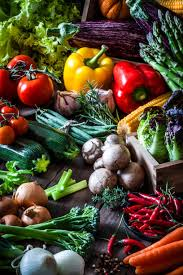
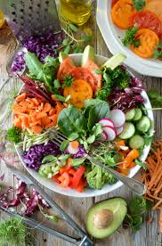

Our Products
.jpg)
Fresh Juice
$20

Fresh Vegatables
$20

Fruit salad
$20
.jpg)
Fruits
$20
Opening Sale Discount 30%
Organic vegatables | 100+ Clients
Organify is a nature-inspired brand committed to delivering pure, sustainable, and organic products that nurture healthier lives and a greener planet.
All products are consistently fresh, crisp, and flavorful. Leafy greens, root vegetables, berries, and tropical fruits retain natural taste and texture. Organic certification reassures customers about purity and safety.Shoppers recommend the service for anyone seeking variety, freshness, and organic produce. The wide selection encourages experimentation with new recipes and ensures healthy, balanced meals.Positive experiences include friendly service, reliable packaging that prevents spoilage, and helpful guidance for selecting the best produce. Repeat customers often mention satisfaction with both quality and variety.The wide assortment encourages healthy eating, lifestyle improvements, and exploration of new fruits and vegetables.
Free and fast shipping has become a key factor in attracting and retaining customers in today’s competitive market. By removing delivery charges, businesses make purchases more appealing, while quick delivery builds trust and encourages repeat orders. Customers increasingly expect same-day or next-day shipping, making speed a major selling point. For companies, offering free and fast shipping not only boosts conversion rates but also enhances brand reputation. To achieve this, efficient logistics, reliable courier partnerships, and strong inventory management are essential. Real-time tracking further improves customer satisfaction by providing transparency and convenience. Overall, free and fast shipping is a powerful strategy to increase sales, customer loyalty, and competitiveness in e-commerce..
customer support ensures that help is always available whenever customers need it, day or night. It builds trust and reliability by showing that a business truly values its customers. Around-the-clock service helps resolve issues quickly, prevents frustration, and improves overall satisfaction. In today’s global market, where customers shop from different time zones, 24/7 support is essential for maintaining smooth operations and consistent communication. Whether through live chat, phone, or email, continuous support enhances brand reputation and customer loyalty. It also gives businesses a competitive edge by ensuring no customer query goes unanswered, anytime or anywhere..
$20
$20
$20
$20
Organic vegetables are grown without synthetic pesticides, herbicides, or chemical fertilizers. They rely on natural farming methods, such as compost, crop rotation, and biological pest control.electus aperiam eum voluptate blanditiis nemo obcaecati dolores. Animi sunt mollitia unde nulla expedita harum error fugit molestiae deserunt, ipsa officia porro laborum, illo, autem iste incidunt dolorem at cumque tempora provident ex libero adipisci sit! Neque illo enim corporis, consectetur autem ipsa modi est reprehenderit officiis pariatur minus, ad in aperiam ratione omnis velit rerum, voluptatibus maiores?
Yuvan
Shoppers consistently recommend the service for anyone seeking fresh, organic, and high-quality vegetables. Many note that they’ve switched entirely from supermarket vegetables to this service due to consistent quality and taste.
sit amet consea harum error fugit molestiae deserunt, ipsa officia porro laborum, illo, autem iste incidunt dolorem at cumque tempora provident ex libero adipisci sit! Neque illo enim corporis, consectetur autem ipsa modi est reprehenderit officiis pariatur minus, ad in aperiam ratione omnis velit rerum, voluptatibus maiores?Anirudh
Organic vegetables are noted for having a richer, natural taste compared to supermarket produce. Tomatoes are juicier, broccoli and cauliflower are more tender, and herbs have a stronger aroma.me necessitatibus. Perferendis unde voluptas, modi quidem architecto rerum sequi sit, accusantium exercitationem quisquam reiciendis ipsa veniam magnam delectus aperiam eum voluptate blanditiis nemo obcaecati dolores. Animi sunt mollitia unde nulla expedita harum error fugit molestiae deserunt, ipsa officia porro laborum, illo, autem iste incidunt dolorem at cumque tempora provident ex libero adipisci sit! Neque illo enim corporis, consectetur autem ipsa modi est reprehenderit officiis pariatur minus, ad in aperiam ratione omnis velit rerum, voluptatibus maiores?
HIP HOP TZ
Signup for our email newspaper to get exercise discounts,updates,and more
Organic produce tastes noticeably better than supermarket alternatives, especially tomatoes and leafy greens.
2025 organify.com